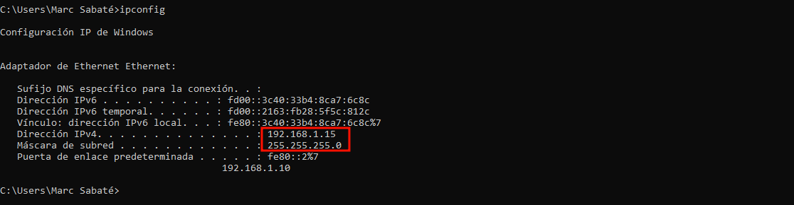
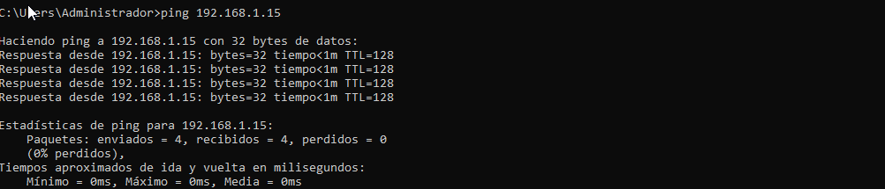

P2 S3
Introducció
En aquest sprint veurem com configurar i administrar dominis en un entorn windows, gestionant comptes d'usuari, grups i perfils mòbils. També establirem polítiques de seguretat i control d'acces als rescursos tant locals com de xarxa.
Active Directory
Active Direcotry es com microsoft anomena a l'implementació de servei de directori en una xarxa distribuïda de computadors.
Microsoft. (s. f.). Información general sobre los servicios de dominio de Active Directory. Microsoft Learn. https://learn.microsoft.com/es-es/windows-server/identity/ad-ds/get-started/virtual-dc/active-directory-domain-services-overview
En aquest apartat veurem com configurar-lo. Com a pas previ, configurarem un segon adaptador de xarxa a la nostra màquina servidor de windows. Una amb NAT i l'altra amb xarxa interna per simular les dos variants.

- Seguidament, entrarem a la configuració de xarxa del servidor per veure s'hi detecta els dos adaptadors.

- A continuació, com ja tenim una adreça per un dels adaptadors configurarem l'altra amb IPv4 tal com es mostra a continuació. I després ho comprovarem amb el CMD.

- Domini
Per començar obrirem la configuració del servidor, l'eina es diu Administrador del serviodr. Aquí agregarem rols i caracteristiques com es mostra.
- Per continuar, seguirem els passos que es mostren, escollint en primer lloc, la instal·lació basada en rols. I escollint el nostre servidor.

- A continuació, escollirem els serveis de DNS i els de l'Active Directory. I ens assegurearem que les caracteristiques corresponen als serveis escollits. Per últim confirmem la configuració escollida.


- Per acabar, veurem que després de la instal·lació es requereix una configuració, al de promoure el servidor a contolador de domini.

- Ara començarem amb aquesta configuració, escollint el nom del nostre domini i agregant un nou "bosc".

- Seguidament, escollirem la contasenya del nostre domini. Ens donarà un error de DNS, aquest es normal, l'ignorarem, i seguirem amb la configuració escollint el nom de la NetBios.


- EN aquest moment, podem veure la revisió de tots els passos i generar un script per aquests.

- Finalment, després de revisar-ho tot procedirem amb l'instal·lació, aquesta reiniciarà el servidor, i després ja podrem iniciar sessió com administrador.

- Unió d'equips
Per unir equips al nostre domini el primer que farem es configurar la xarxa del client per a que aquest tingui de porta d'enllaç i servidor la nostra màquina servidor. Un cop configurada revisarem la seva ip a través del CMD.

- Seguidament comporvarem la connectivitat entre les dos màquines fent un ping. (És possible que sigui necessari desactivar el firewall, també es important que estiguin a la mateixa xarxa de VB).

- Un cop verificada la connectivitat a la nostra màquina client obrirem la configuració del sistema avançada i a nom d'equip i grup la canviarem.

- En aquest punt escollim membre del domini, i posem el domini que hem creat. Ens retornarà un missatge de que s'ha fet correctament, i haurem de reiniciar el clietn.


- Usuaris
Un cop tenim un equip unit al client procedirem amb la creació d'usuaris i per fer això recorrirem a l'eina Usuarios y equipos Active DIrectory. Un cop dins ens desplacem per l'arbre de directoris i escollim la carpeta usuaris. Un cop dins amb el botó dret crearem un usuari nou.

- A continuació ens sortirà una finestra de configuració, per exemple farem un usuari que sigui Keanu.


- Seguidament, quan tenim l'usuari creat obrirem la nostra màquina
Client, allà a "otros usuarios" posem l'usuari que hem creat, per connectar-nos amb ell.

- Hores d'inici de sessió
Als usuaris també els podem establir un temps del dia durant el qual poden establir sessió, això ens pot ser útil per assegurar que els usuaris sol entrin en el seu horari de treball, ara veurem com es configura i que passa si intentem entrar fora del nostre horari.
- Grups
També configurarem grups, per fer un grup seguirem uns passos similars als de l'usuari, però a l'hora de crear un usuari canviarem l'opció per la de crear un grup.
- Quan escollim aquesta opció se'ns obrirà una finestra de configuració per introduir les dades del grup, i després els seus membres.
- Seguidament afegirem un altre usuari al nostre grup i farem que aquest sigui l'administrador del grup, afegint simplement a la pestanya de "Administrado por" l'usuari que volem.


- Accés remot
Per tal d'accedir a internet amb el client a través del servidor hem de configurar l'enrutament i l'accés remot, es important que hi hagi un dels adaptadors dels servidor amb NAT.
- En primer lloc, per configurar l'accés remot anirem a la configuració de rols del servidor, i seguint els mateixos passos que per crear el domini fins arribar al punt de rols, en aquest punt escollim
Acceso remoto. I seguidament tots els serveis que ens surtin.

- Quan fem la instal·lació ens sortirà un missatge emergent per fer una configuració, i se'ns obrirà la finestra de
enrutamiento y acceso remoto.
- Després de donar-li a siguiente a la següent pestanya escollirem l'opció NAT i l'adaptador de xarxa que tenim configurat per NAT. Un cop fet això se'ns instal·larà la configuració i s'iniciarà l'enrutament i accés remot.

- Per comprovar el seu funcionament desde la màquina
client, farem un ping a google.

- Unitats organitzatives (UO) i GPOs
Les unitats organitzatives (OU) d’un domini administrat amb els Serveis de Domini d’Active Directory (AD DS) et permeten agrupar lògicament objectes com comptes d’usuari, comptes de servei o comptes d’equip. Després, pots assignar administradors a unitats organitzatives específiques i aplicar-hi la directiva de grup per establir els valors de configuració desitjats.
Microsoft. (s. f.). Crear una unidad organizativa (OU) en Domain Services administrado. Microsoft Learn. https://learn.microsoft.com/es-es/entra/identity/domain-services/create-ou
- Igual que amb usuaris i grups, per crear una UO, amb el botó dret del ratolí damunt del nostre domini i afegim una Unitat organitzativa. La seva configuració es la següent.


- Dins d'aquesta afegirem alguns usuaris per fer proves.

- GPOs
La directiva de grup permet configurar la configuració de l’usuari i de l’equip en equips que executen sistemes operatius Windows Server i clients Windows. A més d’utilitzar la directiva de grup per definir configuracions per a grups d’usuaris i equips clients, també es pot utilitzar per ajudar a administrar equips servidors, configurant moltes opcions operatives i de seguretat específiques del servidor.
Microsoft. (s. f.). Información general sobre la directiva de grupo. Microsoft Learn. https://learn.microsoft.com/es-es/windows-server/identity/ad-ds/manage/group-policy/group-policy-overview
- Per crear un GPO obrirem l'eina gràfica
Administración de directivas de grupo, i damunt de la UO que hem creat prèviament crearem un GPO i el vincularem tal com es mostra. I li direm restriccions.
- La primera politica que aplicarem serà que per als usuaris de la UO cada cop que iniciïn sessió els surti un missatge de benvinguda, i un text.


- Després és proibirà l'accés a la configuració del bluetooth i al panell de control.


- Amb la configuració que tenim fins ara farem les proves amb els usuaris corresponents.
la següent es obrin el panell de control
- Ara probarem creant una nova GPO que contradigui l'anterior que hem fet i deshabilitarem la prohibició del panell de control.

- En aquest punt obrirem la delegació del GPO sol per a que apliqui a un usuari, en aquest cas George i li donarem l'opció de "exigido" per a que tinguin la mateixa prioritat.

- Quan hi ha una contradicció, o almenys amb aquest cas s'aplica la de primer ordre, per tant la primera.
- GPO de contrasenyes
A part de les GPO que hem vist fins ara hi ha unes que son molt importants a l'hora d'organitzar usuaris, i son les politiques de contrasenya, si volem una configuració bàsica per les contrasenyes les podrem configurar de la següent forma.

- D'aquesta manera ens assegurem que podem recordar fins 10 contrasenyes, que ha de ser complexa i de 8 caracters com a mínim. Que pot estar vigent fins 3 mesos i que un cop canviada has d'esperar tres dies per tornar-la a canviar.
- Perfils mòbils
Els perfils mòbils fan que la informació d'una carpeta d'usuari s'emmagatzemi al servidor, d'aquesta forma es fan accessibles desde tots els clients que formin part del domini.
- Per configurar els perfils mòbils el primer serà crear una carpeta que es dirà Pmobils i un grup de Pmobils on hi hagin els usuaris amb els quals farem proves. A la carpeta li obrim les propietats i a avançats escollim el grup i li donem permisos d'escriptura i lectura.

- Seguidament veurem que tenim una ruta d'acces a la xarxa, la copiarem ja que ens farà falta, per afegir-la de ruta d'accés al perfil de l'usuari que vulguem. En aquest punt ho faig amb Kenau ja que l'he afegit al grup Pmobil.


- Desde el client ens connectem amb keanu i a la ruta de la carpeta podrem accedir sense problemes.

- Per verificar que es mòbil amb a les propietats del sistema podem consultar la configuració de perfils d'usuaris i veurem que keanu surt com a mòbil.

- Seguidament si entrem desde el server amb l'usuari Keanu (s'ha de donar permís abans), veurem que també podem accedir a la carpeta de Pmobils, tant de forma local com amb la de xarxa.
Però per poder-hi accedir amb el servidor hem de configurar la carpeta com si el propietari fos l'administrador.


- Ara que tenim accés desde les dos màquines, crearem un fitxer de prova desde el servidor i després ha de ser accessible desde el client.
- D'aquesta manera veurem que els canvis s'apliquen independentment de la màquina amb la que es realitzen.
- Perfils obligatoris
Un perfil d’usuari obligatori és un perfil d’usuari mòbil preconfigurat per un administrador per especificar la configuració dels usuaris. La configuració definida normalment en un perfil obligatori inclou (però no es limita a) les icones que apareixen a l’escriptori, els fons d’escriptori, les preferències de l’usuari al Tauler de control, la selecció d’impressores, etc. Els canvis de configuració fets durant la sessió d’un usuari, que normalment es desarien en un perfil d’usuari mòbil, no es guarden quan s’assigna un perfil d’usuari obligatori.
Els perfils d’usuari obligatoris són útils quan la normalització és important, com en un dispositiu a pantalla completa o en un entorn educatiu. Només els administradors del sistema poden fer canvis en els perfils d’usuari obligatoris.
Microsoft. (s. f.). Perfil de usuario obligatorio. Microsoft Learn. https://learn.microsoft.com/es-es/windows/client-management/client-tools/mandatory-user-profile
- Per configurar un perfil obligatori anirem com administrador al
servidori a la carpeta de mobils i usuari keanu veurem un fitxer ocultNTUSER.DAT, si canviem l'extensió a .MAN farem que aquest perfil pasi a ser obligatori.

- Per verificar el canvi que hem fet obrim sessió amb el
clienti tal com hem fet abans anem a les propietats del sistema, configuració de perfils d'usuaris i allà veurem que Keanu consta com obligatori.

- Permisos i recursos compartits
Per comprovar els persmisos dels recursos compartits primer farem dos grups extra un de permissiu i un de restrictiu, on afegirem diferents usuaris.

- Seguidament crearem una carpeta anomenada "Treballs" on a les propietats de compartir afegirem els dos grups, el permissiu podrà fer-ho tot, mentre que el restrictiu sol tindrà permís de lectura.

- Desde el client accedim com l'usuari que es dins del grup permissiu, i dins de la carpeta creem un fitxer amb el seu nom i un text identificatiu.

- Per acabar, desde el client ens connectem com l'usuari del grup restrictiu i intentem modificar algun fitxer, com podrem veure no ens deixa ja que ens falten permisos.